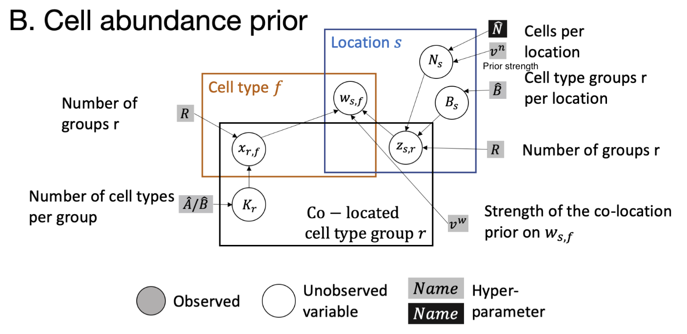

Deconvolution of Spatial Transcriptomics Using scRNA-seq
Wenxin Jiang
Oct. 18, 2024
How to Use This Webpage
Download the slides as a PDF via here.
Press ? on your keyboard to view shortcuts.
Press on your keyboard to navigate.
Click the ☰ button at the lower left to open the menu.
Structure of the Presentation
- Introduction to spatial transcriptomics and scRNA-seq
- Deconvolution methods: RCTD and Cell2Location
- Comparison: Simulation and Real data analysis
Spatially Resolved Transcriptomics:
Method of the Year 2020
Comparison between Sequencing Methods

Understanding the complexity of tissue with bulk RNA-seq, scRNA-seq, and spatial transcriptomics.
Spatial Transcriptomics Maps Gene Expression in Tissue

Spatial transcriptomics combines the spatial information of tissue sections with the gene expression data from RNA sequencing.
Mapping of Cell Types in Spatial Transcriptomics

If there is a single cell type in a spot, we can directly map the most similar cell type from the reference scRNA-seq data.
Example: Mouse Hippocampus in 10X Visium

Each spot may encapsulate multiple cells or cell types.
Gene expression matrix is sparse count data.
The size of the spots in Visium does not allow us to study gene expression in individual cells. With mixed cell types in spots, we cannot directly map the cell types to the spots.
Deconvolution
Mapping scRNA-seq to Spatial Transcriptomics

With the reference scRNA-seq data, we can estimate the cell type composition in each spot of the spatial transcriptomics data.
Single-Cell RNA Sequencing
(scRNA-seq)
ScRNA-seq data provides the gene expression profile of individual cells, which is also sparse count data.
Compare scRNA-seq with Spatial Transcriptomics
- Spatial transcriptomics:
- Spatial information
- Typically low cellular resolution
- Sequence depth is limited
- ScRNA-seq:
- Single-cell resolution
- High sequence depth
Insights from Deconvolution Results

ScRNA-seq and spatial transcriptomics data increase our understanding of the roles of specific cell subpopulations and their interactions in development, homeostasis, and disease.
Deconvolution Methods
Workflow of deconvolution. Up: discovery of cell types in scRNA-seq data. Down: discovery of gene expression in spatial transcriptomics data.
Commonly Used Distribution Models
- Characteristics of scRNA-seq data: This data consists of count data with over-dispersion and large ratio of zero.
- Over-dispersion: The variance is greater than the mean, which is typical in count data.
- Assumption for spatial data: Gene expression in a spot is considered the independent sum of gene expressions from different cell types.
- Commonly utilized distribution models: Negative Binomial (NB), Poisson, and Zero-Inflated Negative Binomial (ZINB).
- Additive Property: Poisson is inherently additive, while NB and ZINB are additive when the dispersion parameter is fixed.
RCTD: Robust Cell Type Deconvolution

Illustration of the RCTD method
RCTD Notation of Indexing:
- $s$: index of the spot in spatial dataset
- $g$: index of the gene
- $f$: index of the cell type
RCTD Notation of Dataset:
Observed data:- $d_{sg}$: observed gene expression count in spot $s$ for gene $g$
- $y_s$: total transcript count in spot $s$, equals to $\sum_g d_{sg}$
- $g_{fg}$: mean gene expression for gene $g$ in cell type $f$
RCTD Model
\[ \begin{aligned} d_{sg}|\lambda_{sg} &\sim \text{Poisson}(y_s \lambda_{sg}) \\ \log(\lambda_{sg}) &= \alpha_{s} + \log(\sum_f w_{sf} g_{fg}) + m_{g} + \epsilon_{sg} \end{aligned} \]
Goal: estimate $w_{sf}$ with $g_{fg}$ estimated from scRNA-seq data.
RCTD Notation of Dataset:
Unknown parameters:- $w_{sf}$: proportion of cell type $f$ in spot $s$. $\sum_f w_{sf} = 1$ and $w_{sf} \geq 0$
- $\lambda_{sg}$: parameter of the Poisson distribution for gene $g$ in spot $s$.
- $\alpha_{s}$: fixed pixel-specific effect for spot $s$
- $m_{g}$: gene-specific platform random effect for gene $g$
- $\epsilon_{sg}$: residual error term for gene $g$ in spot $s$
RCTD Prior Settings
- $m_{g} \sim \text{Normal}(0, \sigma^2_{m})$
- $\epsilon_{sg} \sim \text{Normal}(0, \sigma^2_{\epsilon})$.
RCTD Model Fitting
-
Estimate mean gene expression $g_{fg}$ from scRNA-seq data, denoted as $\hat{g}_{fg}$.
-
Gene filtering: Filter out uninformative genes based on $\hat{g}_{fg}$. Filter to about 3k genes to reduce computational burden.
RCTD Model Fitting
RCTD Model Fitting
-
Inference Estimate $w_{sf}, \alpha_{s}$ and $\sigma^2_{\epsilon}$ by MLE. Assume estimated $\hat{g}_{fg}$ and $\hat{m}_{g}$ are fixed.
-
Expected cell-type-specific gene expression $\mathbb{E}[d_{sf}|w, d_{sg}] =\frac{d_{sg}w_{sf}\hat{g}_{fg}}{\sum_{f'} w_{sf'}\hat{g}_{f'g}}$.
Three Modes of RCTD Model
-
Doublet mode Assigns 1-2 cell types per spot and is recommended for technologies with high spatial resolution such as Slide-seq and MERFISH.
-
Full mode Assigns any number of cell types per spot and is recommended for technologies with poor spatial resolution such as 100-micron resolution Visium.
-
Multi mode is an extension of doublet mode that can discover more than two cell types (up to a pre-specified amount) per spot as an alternative option to full mode.
Cell Type Identification by Model Selection
Denote $\mathcal{L}(f)$ as the likelihood of the model with only $f$ th cell type and $\mathcal{L}(f, f')$ as the likelihood of the model only with $f$th and $f'$th cell types. For each spot $s$:
\[ \hat{f} = \arg\max_f \mathcal{L}(f) \quad \text{and} \quad \hat{f'} = \arg\max_{f'\neq \hat{f}} \mathcal{L}(\hat{f}, f') \]Cell Type Identification by Model Selection
Because we expect many pixels to be single cell types, we can apply a penalized approach similar to AIC to decide between the two models. We select the model maximizing:
\[ \text{AIC}(\mathcal{M}) \equiv \mathcal{L}(\mathcal{M}) - V_p(\mathcal{M}) \]where $p$ represents the number of parameters (cell types) and $V$ represents the penalty weight. Select $V=25$ based on simulation studies.
Confident and Unconfident Spots
Condition: Existence of another pair of cell types $(f, f')$ (f can be equal to f') such that
\[|\mathcal{L}(\hat{f}, \hat{f'}) - \mathcal{L}(f, f')| < \delta\]If the condition holds, the spot is unconfident, else it is confident.
Sequential Quadratic Programming for MLE
Aim: Convert nonlinear problems into a series of quadratic programming (QP) problems.
The parameter $\alpha_s$ effectively allows us to rescale $w_s$, so we define $w_{f, s}=w_{f, s} e^{\alpha_s}$, which will not be constrained to sum to 1. Next, define:
\[ \bar{\lambda}_{s, g}\left(w_s\right)=y_s \sum_{f=1}^F w_{f, s} g_{f, g} e^{\hat{m}_g}=y_s \sum_{f=1}^F w_{f, s} \bar{g}_{f, g} \]We will refer to this as the predicted mean of gene $g$ in pixel $s$.
SQP for MLE (cont.)
The final model is a Poisson log-normal mixture model:
\[ d_{s, g} \mid \bar{\lambda}_{s, g} \sim \operatorname{Poisson}\left(e^{\varepsilon_{s, g}} \bar{\lambda}_{s, g}\left(w_s\right)\right), \quad \varepsilon_{s, g} \sim \operatorname{Normal}\left(0, \sigma_{\varepsilon}^2\right) \]We estimate $w_s^* \geq 0$ as the solution that maximizes the log-likelihood $\mathcal{L}\left(w_s\right)$:
\[ \max \mathcal{L}\left(w_s\right)=\sum_{g=1}^G \log P\left(d_{s, g} \mid \bar{\lambda}_{s, g}\left(w_s\right)\right) \quad \text { subject to: } w \geq 0 \]SQP for MLE (cont.)
From now on, we consider a fixed spot $s$ and suppress the notation of $s$. We will estimate $w^* \geq 0$ as that which maximizes the log-likelihood $\mathcal{L}(w)$:
\[ \max _w \mathcal{L}(w)=\sum_{g=1}^G \log P\left(d_g \mid \lambda_g(w)\right)=\sum_{g=1}^G \log Q_{d_g}\left(\lambda_g(w)\right) \]SQP for MLE (cont.)
Our log likelihood is non-convex. To optimize it, we will apply Sequential Quadratic Programming, an iterative procedure that will be repeated until convergence. Let $w_0$ be the value of $w$ at a given iteration, and let the gradient of $-\mathcal{L}$ be $b(w)$ and the Hessian of $-\mathcal{L}$ be $A(w)$. Then, we can make the following quadratic Taylor approximation to $\mathcal{L}$:
\[ \begin{aligned} -\mathcal{L}(w) \approx&-\mathcal{L}\left(w_0\right)+b\left(w_0\right)^T\left(w-w_0\right)\\ &+\frac{1}{2}\left(w-w_0\right)^T A\left(w_0\right)\left(w-w_0\right) \end{aligned} \]SQP for MLE: Construct Positive Semi-Definite Hessian
This QP will not be well-behaved if the Hessian $A\left(w_0\right)$ is not positive semi-definite, which can occur due to the non-convexity of $-\mathcal{L}(w)$. Specifically, suppose we have an eigen-decomposition of $H$ as:
\[ H=V D V^T \]Here, $D$ is a diagonal matrix of eigenvalues. We obtain the positive semi-definite part of H by taking $D^{+}=\max (D, 0)$ and:
\[ A=V D^{+} V^T \]Advantages of RCTD
- Models platform effects by taking spatial transcriptomics as a pseudo-bulk measurement.
- Robust to varying UMI counts per pixel, multiple cell types per pixel, and missing cell types in the reference.
Platform Effect Estimation

Density plot across genes of measured platform effects between cerebellum scRNA-seq and snRNA-seq (single nucleus RNA-seq) data.
Platform Effect Estimation
In the 3rd step of model fitting, RCTD estimates the platform effect of each gene to transfer cell type information from scRNA-seq to spatial transcriptomics by taking the spatial transcriptomics as a bulk measurement.

Left: Scatter plot of measured versus predicted platform effect for each gene between the sc and sn cerebellum datasets. Right: Confusion matrix for RCTD’s performance on cross-platform (trained on snRNA-seq data and tested on scRNA-seq data).
Robustness
-
Varying unique molecular identifier (UMI) counts per pixel: Additional UMIs per pixel lead to an increased confidence rate.
-
Multiple cell types per pixel: RCTD was able to accurately predict cell class proportions on pixels containing three or four cell types.
-
Missing cell types in the reference:When cell types in the simulated spatial data were missing from the reference, RCTD classified pixels as the most transcriptionally similar cell type in the reference if available. When no closest cell type was available in the reference, RCTD predicted cell types with reduced confidence rates but often misclassified such pixels.
Limitations
- Assumes that platform effects are shared across cell types and random noise $\epsilon_{fg}$ is shared across genes.
- Hard to handle cases when the cell type is missing from the reference but exists in the spatial data.
Cell2Location
Illustration of the Cell2Location method
Cell2Location Notation of Index
- $g \in \{1, \ldots, G\}$: Gene
- $s \in \{1, \ldots, S\}$: Spot
- $e \in \{1, \ldots, E\}$: Spatial dataset
- $f \in \{1, \ldots, F\}$: Cell type
Cell2Location Notation of Dataset
Input: Matrix of reference expression levels $g_{fg}$ and matrix of spatial expression counts $d_{sg}$.
Main output: Cell abundance $w_{sf}$ which can be transformed into cell type proportions.
Cell2Location Model of mRNA Counts

Cell2Location Notation of Model Parameters
- $d_{sg}$: Spatial expression of gene $g$ in spot $s$
- $\mu_{sg}$: Unobserved expression level (rate) of gene $g$ in spot $s$
- $\alpha_{eg}$: Gene- and batch-specific over-dispersion parameter
- $m_{g}$: Technology sensitivity parameter for gene $g$
- $w_{sf}$: Regression weight for cell type $f$ in spot $s$
- $g_{fg}$: Reference expression level of gene $g$ in cell type $f$
- $s_{eg}$: Gene-specific additive shift in spatial dataset $e$
- $y_s$: Location-specific scaling factor for spot $s$
Cell2Location Cell Abundance Prior
Prior Settings of Cell2Location
Gene-specific multiplicative scaling factor
The prior on detection efficiency per location
Overdispersion for each gene
Additive shift for genes
Cell abundance prior:
Cell2Location Model: Probabilistic Graph

Strength of the Cell2Location Model
Joint modeling of multiple spatial experiments / batches provides several benefits due to normalization and sharing of information between experiments:
-
Modeling differences in RNA detection sensitivity across experiments: $y_e$ and $y_s$.
-
Increasing accuracy by improving the model's ability to distinguish low sensitivity $m_g$ from zero cell abundance $w_{rf}$.
-
Increasing sensitivity by sharing factorization prior on cell abundance $w_{rf}$, namely which cell types tend to co-locate across experiments represented by $x_{rf}$.
Fitting the Cell2Location Model
Step 1: Construction of Reference Cell Type Signatures
-
Distribution : By default, the Cell2Location employs a negative binomial regression to estimate reference cell type signatures, which allows robust combination of data from multiple sources. -
Mean : Alternatively, a hand-coded method that estimates the average expression of each gene in each cell type can be used.
Fitting the Cell2Location Model
Step 2: Determining the Hyperparameters
-
Expected cell abundance $\hat{N}$ per location : Can be derived from histology images or tissue type. -
Hyperparameter $\alpha^y$ for regularizing within-experiment variation in RNA detection sensitivity : If not strong within-experiment variability in RNA detection sensitivity across locations, set $\alpha^y=200$. Otherwise, set $\alpha^y=20$.
Fitting the Cell2Location Model
Step 3: Variational Inference
Variational Bayesian Inference is used to approximate
the posterior, building on the Automatic Differentiation Variational Inference (
The posterior distribution over unknown parameters
is approximated by softplus-transformed (to ensure a positive scale)
Brief Introduction to Pyro
Here's an example to illustrate the use of Pyro for inference:
data = np.random.binomial(1, 0.8, size=200) # random-generated data
def model(data): # define the probabilistic model
# define the hyperparameters that control the Beta prior
alpha0 = pyro.param("alpha0", torch.tensor(10.0))
beta0 = pyro.param("beta0", torch.tensor(10.0))
# sample f from the Beta prior
f = pyro.sample("latent_var", dist.Beta(alpha0, beta0))
# sample observed data from the Bernoulli likelihood
with pyro.plate("data", len(data)):
pyro.sample("obs", dist.Bernoulli(f), obs=data)
svi = SVI(model,
AutoDiagonalNormal(model),
Adam({"lr": 0.0005, "betas": (0.90, 0.999)}),
loss=Trace_ELBO())
[svi.step(data) for _ in range(1000)] # run inference

Features of Cell2Location
-
Borrow statistical strength across locations with similar cell composition
-
Account for batch variation across slides as well as variation in mRNA detection sensitivity
-
Estimate absolute cell type abundances by incorporating prior information about the analyzed tissues
-
Computationally efficient, owing to variational approximate inference and GPU acceleration
-
Integrated with the scvi-tools framework and comes with a suite of downstream analysis tools
Sensitivity Analysis of Cell2Location
Cell2Location is sensitive to the choice of $\alpha^y$ and $\hat{N}$ but robust to $\hat{A}$ and $\hat{B}$.
Ablation Study and Unaligned Cell Type Signatures

The factorization of the cell type abundance prior $w_{sf}$ and the gene-specific technical sensitivity scaling factor $m_g$ are crucial.
When removing fractions of cell types from the reference signatures, the performance of Cell2Location decreases slightly.
Limitations and Potential Improvements
- Limitations: high computational cost and sensitivity to hyperparameter choices.
- While Cell2Location performs excellently in simulation studies, it competes closely with RCTD in real data analysis.
- Potential improvements: deep learning accelerates tools (e.g., early stopping, learning rate scheduling, etc.) and applying amortized inference.
Accelerating Deep Learning with PyTorch Lightning

PyTorch Lightning simplifies deep learning code and accelerates the training process.
Comparison of RCTD and Cell2Location
Modeling, Inference, and Simulation
Model of RCTD and Cell2Location
\[d_{sg}|\lambda_{sg} \sim \text{Poisson}(y_s \lambda_{sg})\]
\[ \begin{aligned} \log(\lambda_{sg}) &= \alpha_{s} + \log(\sum_f w_{sf} g_{fg})\\ &\quad + m_{g} + \epsilon_{sg} \end{aligned} \]
RCTD Model
Probabilistic Graph of Cell2Location
Inference Methods
RCTD
Sequential Quadratic Programming for MLE
Convert nonlinear problems into a series of quadratic programming
Cell2Location
Automatic Differentiation Variational Inference
Guide by AutoNormal or Encoder
Programming Language and API
RCTD: R
spacexr
Cell type-specific differential expression with C-SIDE
Cell2Location: Python
scvi-tools / Pyro
Perform many analysis tasks across single-cell, multi, and spatial omics data, e.g., dimensionality reduction, FA, auto-annotation, DE, etc.
Simulation Study

Real Data Analysis: DLPFC
Human DorsoLateral PreFrontal Cortex (DLPFC)
- 10 adult neurotypical controls
- 3 positions: anterior, middle, and posterior
- Annotated snRNA-seq and spatial transcriptomics
- By 10x Genomics Chromium and Visium

Study design to generate paired single nucleus RNA-sequencing (snRNA-seq) and spatially-resolved transcriptomic data across DLPFC.
Real Data Analysis: Data after QC
QC: Criteria
- Remove cell types with fewer than 25 cells
- Reduce genes according to the minimum average expression and log fold change
- Remove genes appearing in fewer than 10 spots
- Keep genes present in both snRNA-seq and spatial transcriptomics
- Reduce #gene to around 3k
Spatial Transcriptomics
- #Spot: 3639
SnRNA-seq
- #Gene: about 3k
- #Cell: 2k-5k
Real Data Analysis: Layer Level Results

Left panel shows layer level results of two methods in paired DLPFC data. Right panel shows the manual annotation.
Real Data Analysis: Cell Type Level Results
Cell type level results of RCTD and Cell2Location in paired DLPFC data. Manual annotation of two cell types: Astrocytes in layer 1, Micro-Oligodendrocytes in layer 1 as well as white matter. Upper left shows the result of deconvolution visualizing the proportion of a given cell type. Lower left shows the result of mapping assigning spots to the most likely cell type.
Insights from Real Data Analysis
- The runtime of Cell2Location is significantly longer than RCTD. Deep learning-based methods may not converge if the runtime is limited.
- Although Cell2Location may not always converge, its results appear to be more accurate than those of RCTD.
- Compared to RCTD, Cell2Location provides smoother and less noisy results.
- At the layer level, Cell2Location can leverage spatial information regarding the similarity of spots, which may enhance its performance.
References
- Kleshchevnikov V, Shmatko A, Dann E, et al. Cell2location maps fine-grained cell types in spatial transcriptomics[J]. Nature biotechnology, 2022, 40(5): 661-671. [link]
- Cable D M, Murray E, Zou L S, et al. Robust decomposition of cell type mixtures in spatial transcriptomics[J]. Nature biotechnology, 2022, 40(4): 517-526. [link]
- Marx, V. Method of the Year: spatially resolved transcriptomics. Nat Methods 18, 9–14 (2021). [link]
- Understanding Complexity. Luciano Martelotto. Twitter. 2023. [link]
- Li B, Zhang W, Guo C, et al. Benchmarking spatial and single-cell transcriptomics integration methods for transcript distribution prediction and cell type deconvolution[J]. Nature methods, 2022, 19(6): 662-670. [link]
- Longo S K, Guo M G, Ji A L, et al. Integrating single-cell and spatial transcriptomics to elucidate intercellular tissue dynamics[J]. Nature Reviews Genetics, 2021, 22(10): 627-644. [link]
- Integrating Single Cell and Visium Spatial Gene Expression Data. 10x Genomics. 2023. [link]
- Spatial Decomposition. Open Problems in Single-Cell Analysis. 2023. [link]
References
- Huuki-Myers L A, Spangler A, Eagles N J, et al. A data-driven single-cell and spatial transcriptomic map of the human prefrontal cortex[J]. Science, 2024, 384(6698): eadh1938. [link]
- Andersson A, Bergenstråhle J, Asp M, et al. Single-cell and spatial transcriptomics enables probabilistic inference of cell type topography[J]. Communications biology, 2020, 3(1): 565. [link]
- PyTorch Lightning. 2023. [link]